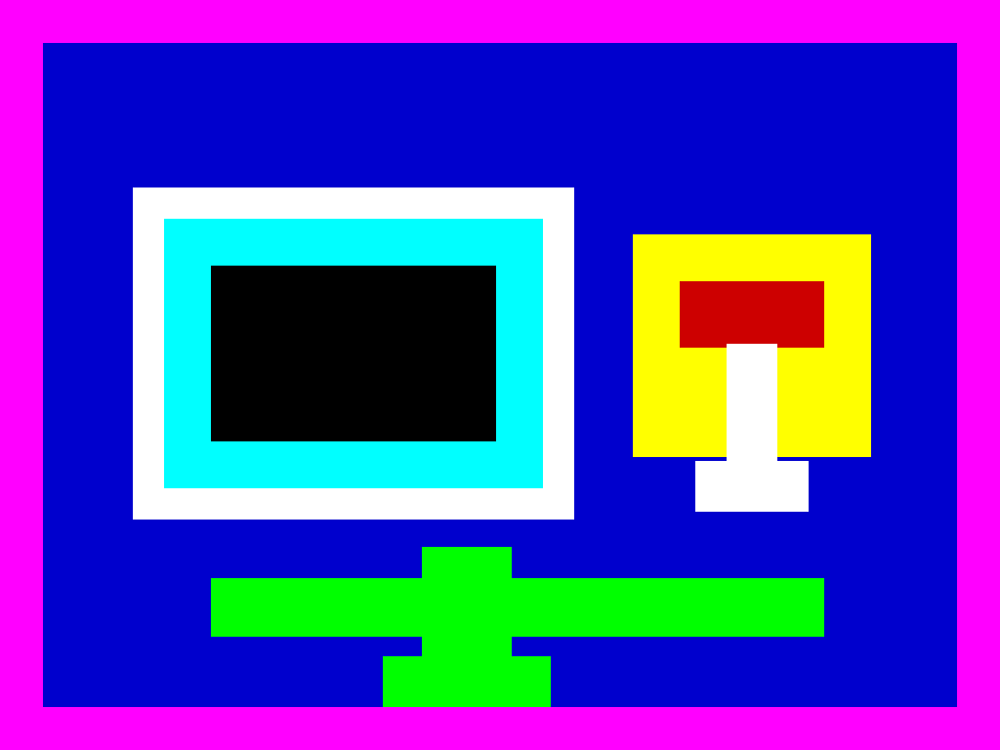

Sobre esta unidad

Esta unidad de ejemplo ha sido creada por el Área de Tecnología Educativa de la Consejería de Educación, Formación Profesional, Actividad Física y Deportes del Gobierno de Canarias, para mostrar el estilo Pocket.
Agradecimientos: comunidad de eXeLearning, mantenida por el CEDEC y las diferentes administraciones educativas del Estado.
Licencia: Creative Commons CC0 1.0 Universal (dominio público). Puedes reutilizar este recurso sin restricciones de derechos de autor.
Descarga el archivo fuente
| Título | El ciclo del agua · Pocket |
|---|---|
| Descripción | Unidad didáctica de ejemplo sobre el ciclo del agua, en estilo Pocket. |
| Autor | Área de Tecnología Educativa · Gobierno de Canarias |
| Licencia | Creative Commons: CC0 1.0 Universal (dominio público) |
Este contenido se ha creado con eXeLearning, un editor libre y de código abierto para crear recursos educativos.